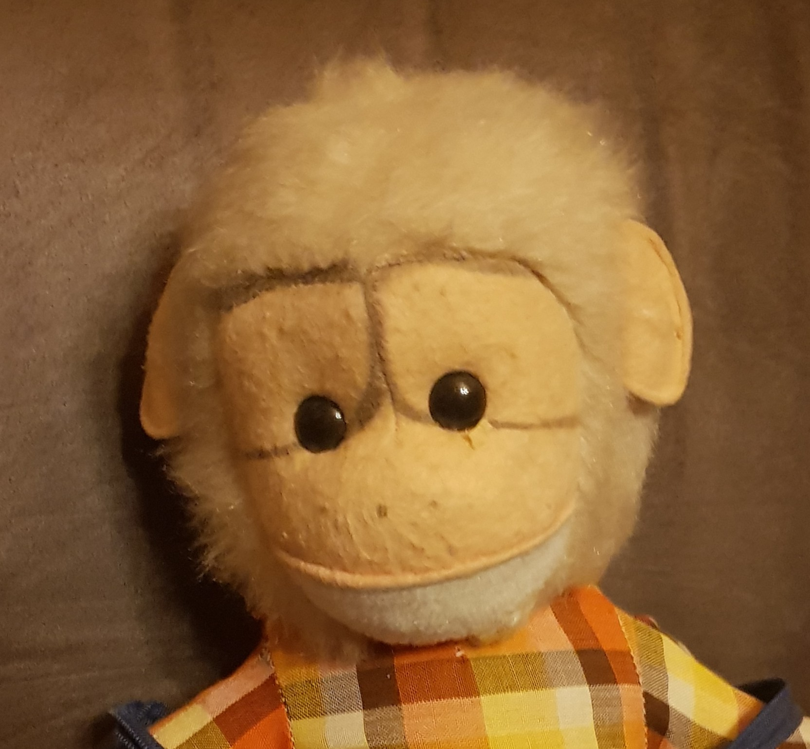

Heini
Uudelleenkouluttautumassa oleva tieto- ja viestintätekniikan opiskelija, opiskelemassa ohjelmistokehitystä.
Perustiedot
- Kotikaupunki: Savonlinna Tähän tulee vihjeteksti
- Harrastus: lukeminen, valokuvaus, nukkekodit Tähän tulee vihjeteksti
- Lempiväri: vihreä Tähän tulee vihjeteksti
- Suosikki vuodenaika: syksy Tähän tulee vihjeteksti
- Suosikkiruoka: Uunilohi Tähän tulee vihjeteksti
Missä olen hyvä?
Kuuntelemisessa, mielikuvituksellisissa asioissa
Mistä tulen hyvälle mielelle?
Hyvästä kirjasta koska sen kautta voi siirtyä uuteen maailmaan. Pienistä asioista ja esineistä koska ne ovat kiehtovia. Luonnosta koska se on aina muutoksessa.
Mistä tulen pahalle mielelle?
Ilkeistä ihmisistä koska ankeuttavat toisten mielialaa.
Supervoima, jonka haluaisin?
Haluaisin omaksi supervoimakseni E.T.:n parantavan sormen. Käyttäisin sitä parantamaan pieniä haavoja ja isompia sairauksia.
Missä näen itseni viiden vuoden kuluttua?
Viiden vuoden kuluttua haluaisin olla siinä tilanteessa että minulla olisi sopivassa suhteessa työtä ja vapaa-aikaa. Saisin nauttia hyvästä kirjasta ilman että tarvitsisi huolehtia laskuista tai voisin lähteä pienelle matkalle. Haluaisin myös asua veden äärellä tai metsän keskellä, lähellä luontoa.